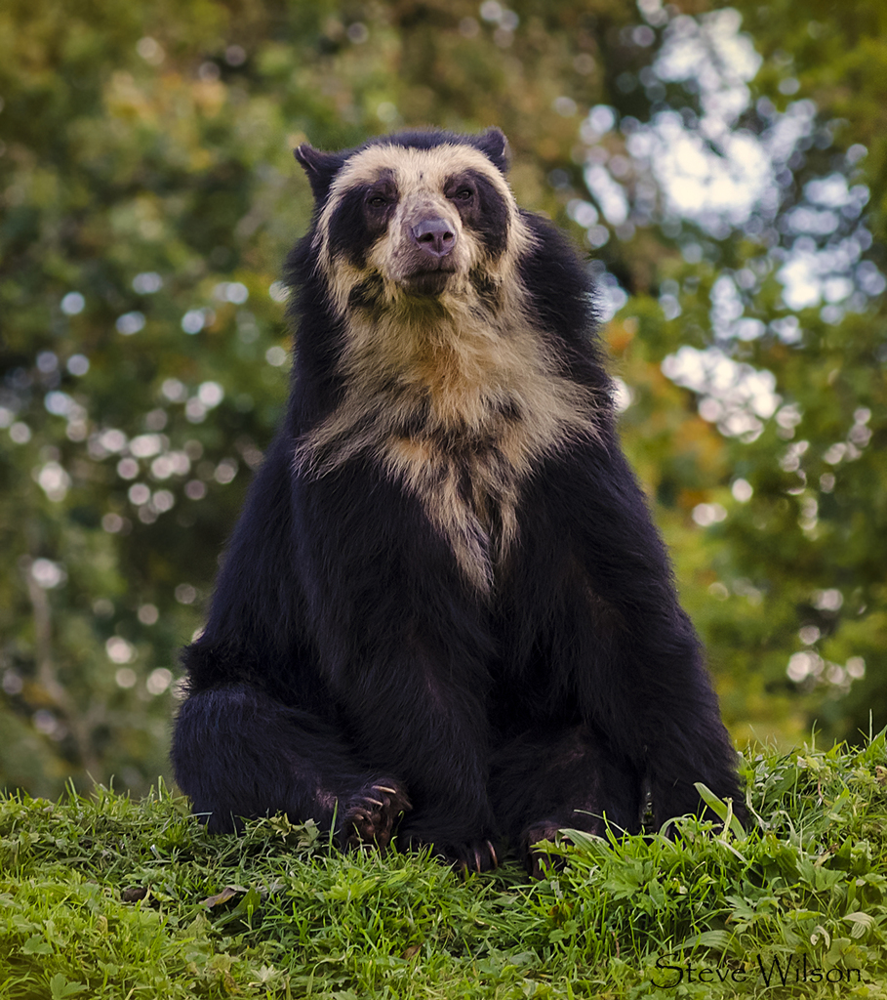

O Urso-de-óculos é o único urso nativo da América do Sul e é considerado o maior carnívoro terrestre desta parte do continente, embora apenas 5% de sua dieta seja carne. Em tamanho, é superado pela onça-pintada, que é o maior carnívoro terrestre sul-americano. Entre os animais nativos da América do Sul, apenas as antas são maiores que o urso-de-óculos. Esses ursos têm pelagem geralmente negra, mas podem variar de marrom escuro a avermelhado, com marcas bege ou brancas no rosto e tórax. Os machos são cerca de um terço maiores que as fêmeas, podendo pesar de 100 a 200 kg, enquanto as fêmeas pesam de 35 a 82 kg. O comprimento varia de 120 a 200 cm, com a maioria dos machos adultos medindo mais de 150 cm. O urso-de-óculos possui um focinho curto e largo em comparação com outras espécies de ursos. Apesar de ter características faciais semelhantes a ursos carnívoros extintos, sua dieta é predominantemente herbívora. As marcas claras únicas em sua face e tórax permitem a identificação individual desses animais.
Os Ursos-de-óculos são encontrados principalmente no norte e oeste da América do Sul, incluindo oeste da Venezuela, Colômbia, Equador, Peru, oeste da Bolívia e noroeste da Argentina, quase em toda a Cordilheira dos Andes. Antes da fragmentação das populações nos últimos 500 anos, eram conhecidos por sua adaptabilidade a uma variedade de habitats e altitudes, como florestas, pastagens de altitude, florestas secas e desertos. O habitat ideal para os ursos-de-óculos são as florestas úmidas de montanha, com elevação entre 1000 e 2700 metros, sendo mais comuns em áreas com maior umidade. Podem ocasionalmente ser encontrados em altitudes mais baixas, mas raramente abaixo de 1900 metros nos contrafortes.
Os Ursos-de-óculos são animais ativos tanto durante o dia quanto durante a noite, mas nas áreas desérticas do Peru são mais ativos durante o dia. Sua habilidade de sobreviver perto de humanos é em grande parte devido à capacidade de escalar árvores altas, onde buscam refúgio na presença de pessoas. Eles podem construir ninhos nas árvores para ocultação, descanso ou armazenamento de alimento. Embora sejam geralmente solitários, os ursos-de-óculos podem se alimentar em pequenos grupos em locais com abundância de alimento. Os machos têm territórios médios de cerca de 23 quilômetros, enquanto as fêmeas têm territórios menores, em torno de 10 quilômetros. Quando encontram humanos, tendem a reagir de maneira dócil, porém cautelosa, a menos que sintam ameaça, especialmente as mães em defesa de seus filhotes. Houve apenas um registro confirmado de morte humana causada por um urso-de-óculos, que ocorreu durante uma caçada.

Ordem: Carnivora
Família: Ursidae
Gênero: Tremarctos
Espécie: Tremarctos ornatus